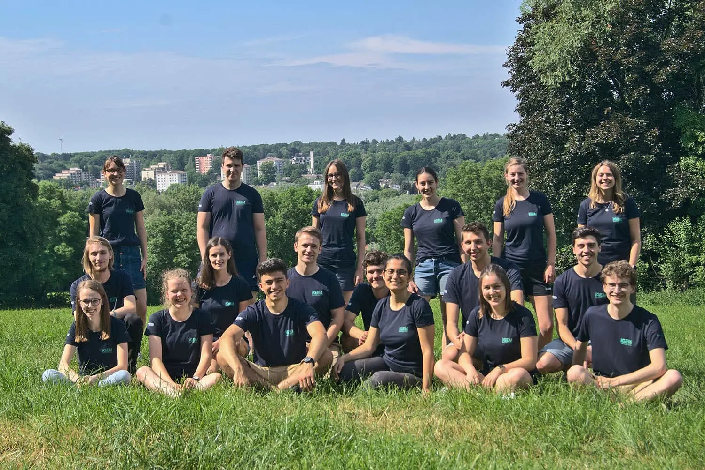

Project
Description
Implementation
Engineering
Proof of Concept
Contribution
Memes
Wetlab
Experiments
Notebook
Protocols
Results
Outlook
Safety
Drylab
Hardware
Modeling
Software
Human Practices
Human Practices
Communication
Education
Collaborations
Team
Team
Attributions
Sponsors
Meet the Team

With iGEM I am eager to learn as much as possible about working on a scientific project together with many motivated people and possibly leave a mark in the world of biotechnology.
Viktor Doychev, 22
B.Sc. Biotechnology
I see iGEM as an opportunity to challenge myself, meet new people and gain some new experiences.
Alina Frank, 21
B.Sc. Biology
I want to make the experience of developing a new field with our own project as a team in synthetic biology and go through highs and lows together on our way to the goal: a functioning project. Therefore, fun and teamwork with nice teammates is/are(?!) the top priority for me.
Anna Maria Haut, 23
M.Sc. Biotechnology
With iGEM I want to gather experiences while exploring new fields of synthetic biology as an interdisciplinary team.
Tobias Jülich, 20
B.Sc. Biotechnology
I would like to attain knowledge and bring my experiences to an application while teaming up to solve scientific problems. This is my first time working in a larger team and building up a project from the bottom.
Kim Keilen, 20
B.Sc. Biotechnology
In my eyes iGEM is a chance to challenge myself in interdisciplinary fields, to gain experience in planning an own project and to meet interesting and ambitious people from all over the world. I am looking forward to a great time with my new team here in Aachen.
Marie Kolvenbach, 21
B.Sc. Biology
iGEM gives me the chance to get insights in Biotechnology and get to know new people from different disciplines. I like the idea to apply my skills in Computer Science in this area to support my team on this project.
Clemens Köhler, 22
B.Sc Computer Science
I am looking forward to get to know other students from Aachen and around the world while working on a project in synthetic biology – a research topic that fascinates all of us.
Hannah König, 21
B.Sc. Biotechnology
To get practical experience, meet new people, and connect more with the science world
Dominic Kösters, 25
M.Sc. Biotechnology
With iGEM I hope to gain experience in teamwork; I want to challenge myself as I believe trying something new is a great foundation for one’s self-development
Marie Laufens, 21
B.Sc. Biotechnology
For me, participating in the iGEM is an opportunity to make my contribution to science. It is also a challenge, because this project requires a lot of patience in addition to creativity and teamwork.
Daniel Mehling, 26
M.Sc. Biotechnology
Gaining practical experience in the field of biotechnology with an interdisciplinary team is a great way to meet new people who share the same interests.
Amir Mirmoini, 24
B.Sc. Chemical Engineering
I am fascinated by seeing Ideas develop and thrive through the work one puts in them. I am hoping to experience that in IGem.
Matthias Monissen, 20
B.Sc Biotechnology
Learning, sharing knowledge, meeting new people and developing new interests is my personal way of life, and I believe working on a project with interesting people in an incredibly fascinating field, provides exactly that.
Willy Mroczowski, 20
B.Sc. Biology and Computer Science
I love seeing ideas grow into visions and finally turning them into project.
Polina Ries, 20
B.Sc. Biotechnology
When I heard of iGEM I was fascinated by the idea of turning a theoretical idea into a working project and I knew I wanted to be a part of it.
Marijke Rudolph, 20
B.Sc. Biotechnology
I love the idea of working together with other highly motivated students on a very interesting project that could one day change the world.
Malte Schwerin, 22
M.Sc. Computer Science
Especially during the Covid-19 Pandemic, connecting to other people has become really difficult. I see IGEM as an opportunity to work as a team, gain experience in lab work and taking another step towards becoming a Biotechnologist.
Alina Stefanowski, 20
B.Sc. Biology
I am looking forward to learn more about synthetic biology, also gaining the experience of working together as an interdisciplinary team on our own idea.
Zeynep Türkyilmaz, 25
M.Sc. Biology
With iGEM, I can learn more about synthetic biology and also connect with people who share the same interests
Theresia Vu, 20
B.Sc Business Administration and Engineering
I was looking for an opportunity to apply the academic knowledge, to get in touch with ambitious people, and to work together on an innovative project.
Martin Zens, 21
B.Sc Biotechnology